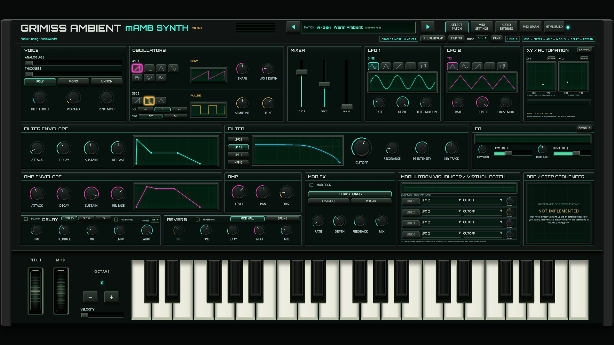
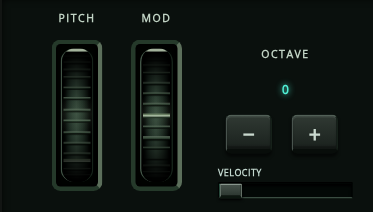
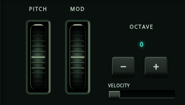
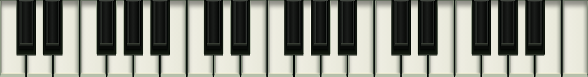
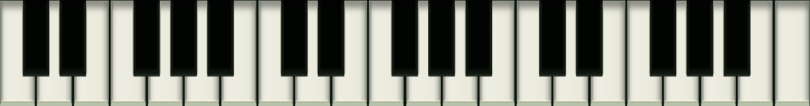

Play updated synthStandalone HTMLImplementation and validation
Velocity now defaults to0 for factory/default patches. Explicit USER patch values still recall. Analog Age changes saturation, tone and movement; Thickness adds a shared detuned ensemble that remains different in mono. This replaces the earlier mostly subtle drift/width approach while keeping zero neutral.
These eight-second renders use identical notes/patch/seed and bypass the effects. They are for your audition; no human listening result is claimed.
In the sine test, Age's third-harmonic ratio rises from0.083 to0.274, with approximately0.5dB RMS difference: more changed harmonic content rather than just loudness. Thickness changes the RMS-normalised mono waveform by approximately0.62 in POLY/MONO and0.56 in UNISON. One shared8KB circular buffer at48kHz supplies the ensemble; no duplicate voice engine or second timbre is added.
1920 keys visible1920 hidden1600 visible1600 hidden

All ten OSC1/OSC2 shape switches are22×17 native units, including the second row. Selected edges are2px with colour-matched thick icon strokes and glow.

The body no longer translates. Thirty-six cylinder ribs project through a stationary shaded shell, with the index rolling out of view at the ends. MIDI, pointer/touch input, pitch spring return and retained MOD state use the same visual projection.


The deeper white shoulders and31×89 recessed pockets surround the25×79 black bodies. Pocket floors and traced white edges remain visible; the previous outer floating shadow and illuminated-frame finish are removed. The37-note range, natural E–F/B–C gaps, note targets, highlights and hide/show remain.

Diagnostic only: black bodies temporarily hidden to expose the actual white-key silhouettes and pockets.

The visible PLAY range heading and the VOICE explanatory text have been removed; the PITCH DRIFT knob label remains.
Node/Linux offline48kHz/128-frame processing, two rendered seconds per run, warmed/interleaved with four measured runs. Variance is visible in the timings; negative changes do not establish a performance improvement. This is throughput, not physical Windows/tablet deadlines or dropout validation.
| Mode | Thickness | Previous median ms | Current median ms | Change |
|---|---|---|---|---|
| POLY | 0 | 281.9 | 279.5 | -0.8% |
| POLY | 100 | 288.8 | 272.6 | -5.6% |
| MONO | 0 | 41.5 | 42.9 | +3.4% |
| MONO | 100 | 43.5 | 46.4 | +6.7% |
| UNISON | 0 | 131.5 | 135.4 | +3.0% |
| UNISON | 100 | 148.5 | 160.1 | +7.8% |
Complete regression suite passed. Final CSS key finish was additionally rechecked with the mechanical/control browser tests. Coverage includes real mouse/CDP touch, Worklet/fallback, audible controller paths, raw velocity routing, patch persistence, four routes, all voice modes/effects, stable phases, source ownership and PANIC. Mechanical checks cover four target layouts, uniform switch sizes, wheel projection, all37note IDs and30white-notch hit regions. No main merge; rollback/pre-expressive-controls preserves the prior build.
Physical MIDI/device tests and human listening remain unverified. Local Chromium and native deployment status are distinct from live-domain browser QA, which is limited by the execution environment's proxy policy.